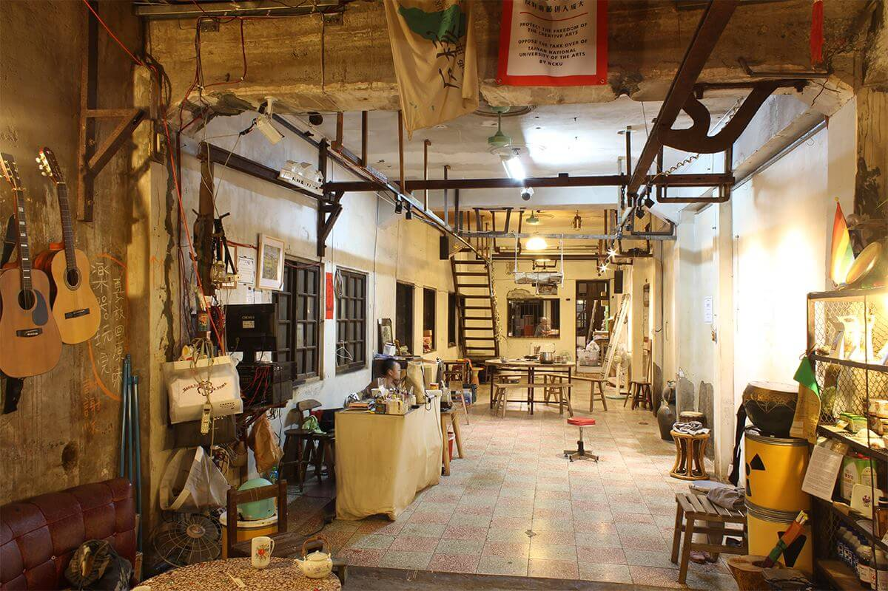
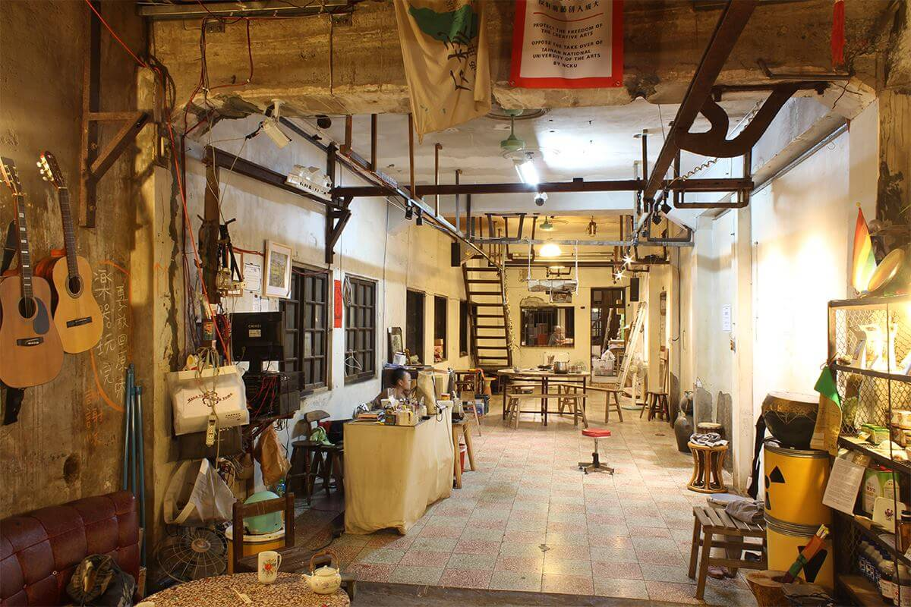

關於我們
2013年能盛興工廠成立，與其他的藝文空間迥異，組成的成員是一群關心生存環境、以社會運動為導向，平均年齡26歲的青年團隊。從一張共同煮食的餐桌，逐漸形成互相關照的大家庭，團隊以公社形式經營空間，以社運、展演、講座、市集等形式促進更多關於環保、自然農法、多元成家等法案的審議推進與推廣教育。
2016年成立藝術村，以能盛興主體自我發現與再建構的計畫作為開端。我們進行了一個研究型的策展想像，以一年三段式主題進行實驗，關注境外至我們生存土地、再由土地聚焦至這微小青年團隊幅散出的效應。能盛興提供房間、工作室、各類技術支援、社群連結以及深厚的在地情感資源。透過邀請探討社會議題的藝術家、策展人和其他藝文工作者與能盛興工廠互動及生活，期待以藝術作為方法，進行更為感性的提問，反思自身處境，並讓這些議題透過藝術話語，跟觀眾互動的過程中獲得延展。進行此類國際藝術文化的學習與交流活動，我們將得以推動更多富含活力，以及深度人文關懷的計畫型藝術項目。
藝術村歡迎每位即將前來駐村或合作的朋友，都能夠在前述的條件下，順利推進標定的創作、策展，與研究計畫。
淮橘為枳rahil
藝術家│Artist│丘偉揚 Hew Wai-Yang、張恩滿 Chang En-Man
策展人│Curator│邱柏廷 Chiu Po-Ting
展覽時間│Term│06/04 ～07/03開幕時間│Opening│02:00 pm 06/04
「啊 檸檬色兮異國暗暝」
─ 黃勁連
在旅行嗎？流浪嗎？還是異地生根了？身處於不同的地理位置，必定接觸不同的政經條件以及不同的文化風土，遭遇到他人的差異現實。人們並就此發展出新的，或保留原有之勞動生命、婚姻關係、文化風俗甚或政治衝突結構。何處是你的應許之地？而所謂的他者，會不會其實就是自己的一個面向？藝術家又怎麼以創作探問此類問題？
公共科診間
藝術家│Artist│李奎壁 Li Kuei-Pi、李珮瑜 Lee Pei-Yu、聶克 Nicholas Coulson
策展人│Curator│邱柏廷 Chiu Po-Ting、蔡繡如 Showzoo Tsai
展覽時間│Term│08/06 ～09/04
開幕時間│Opening│02:00 pm 08/06
告別了舊時代，直線地前進與突破再也不可能，事件往往一波未平一波又起，取代原有的節奏。重大議題正往各個角落發展，並在連鎖反應中彼此糾纏。對於投向它們的研究，還有取樣審視的可能嗎；還有把主體從被動回應現實的狀態，扭轉成自我實現的可能嗎？能盛興的成員們把「工廠」的符號，透過自己的實踐，將其內涵轉換以社群實驗空間。在這裡的藝術活動，也不遺餘力地對社群關係進行探問。
Etiam veroeros lorem
Phasellus ac augue ac magna auctor tempus proin
accumsan lacus a nibh commodo in pellentesque dui
in hac habitasse platea dictumst.
 
